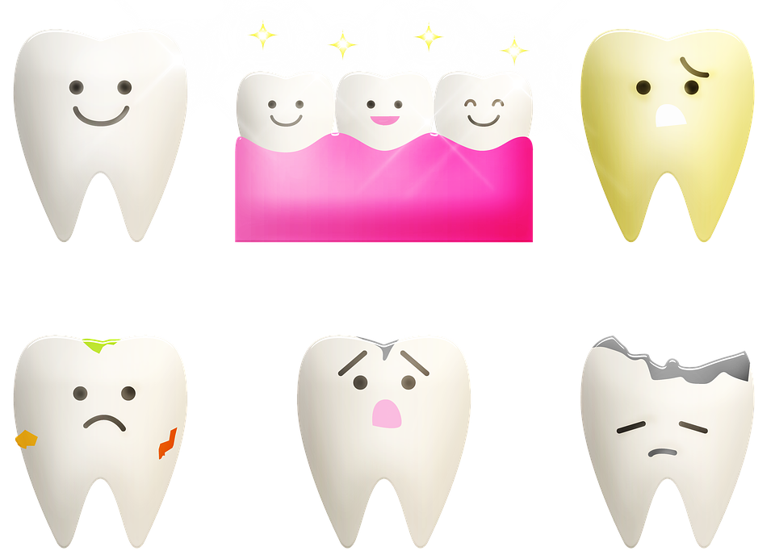
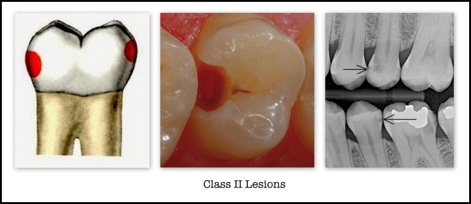
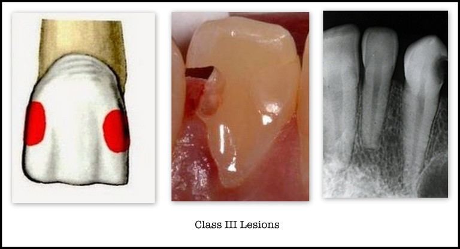
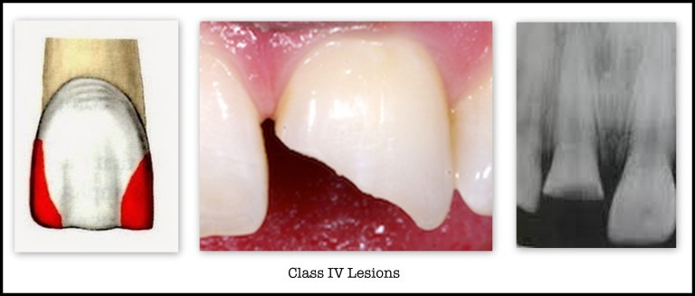
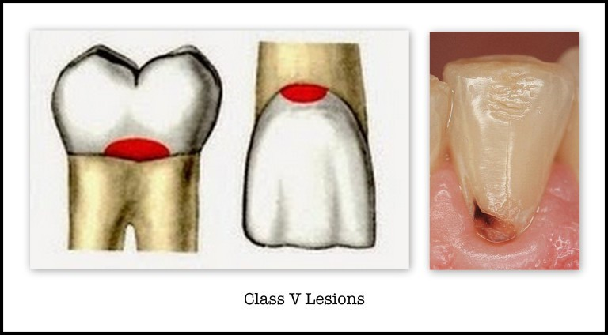
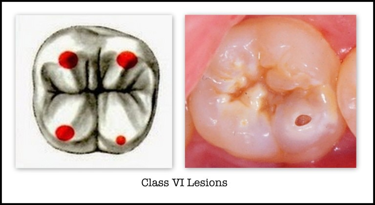

Dental Publications
This article explains the latest dental treatment techniques, and the most successful preventive measures for enjoying strong healthy teeth, in addition to dental implants, dental bridges, orthodontics, and other miscellaneous information

Types of tooth decay, its stages and how to treat it
Table of Content
Tooth decay
Tooth decay is the softening of your tooth enamel and refers to the damage of the tooth structure caused by acids that are created when bacteria break down sugar in your mouth. If this loss of mineral from the enamel is left untreated, a cavity, or hole in the tooth, can eventually occur.
Tooth cavity
Cavities are permanently damaged areas in the hard surface of your teeth that develop from untreated tooth decay.
Tooth decay is caused by
When the bacteria that cause cavities get sugars and starches from foods and drinks, they form an acid. This acid can attack tooth enamel, leading to mineral loss.
Cavities, which are damaged areas, form permanently in the hard surface of teeth, which develop into small holes or holes.
It is caused by a combination of factors, including bacteria in the mouth, frequent snacking, sipping sugary drinks, and not brushing teeth well.
Sudden rapid tooth decay
Rampant caries are a suddenly appearing, rapidly burrowing type of caries resulting in early pulp involvement, in which more than 10 new lesions appear every year on healthy teeth surfaces which are generally immune to caries.
Wisdom tooth decay
Partially impacted wisdom teeth appear to be at higher risk of tooth decay (caries) than other teeth. This probably occurs because wisdom teeth are harder to clean and because food and bacteria get easily trapped between the gum and a partially erupted tooth.

Read more : Dental Implant in turkey : How, Advantages and Risks
Tooth decay symptoms
Dental decay complications and symptoms can vary, depending on the severity of the damage caused. According to information from the National Institute of Dental and Craniofacial Research (NIDCR), some people in the early stages of tooth decay may not experience any symptoms. However, as caries develops and remains untreated, a person may experience the following:
- Toothache, or pain that occurs without any apparent reason.
- Tooth sensitivity.
- Mild to severe pain when eating or drinking something sweet, hot, or cold.
- Visible holes or pits in the teeth.
- Food often gets stuck in the teeth.
- Black or white spots on any surface of the teeth.
- Pain when biting.
- Dental abscesses cause pain, facial swelling, or fever.
Read more : What is a veneer? - Why are veneers cheaper in Turkey?
Types of dental caries
Over 100 years ago, Dr. G.V. Black (1836-1915) developed a system to categorize carious lesions based on the type of tooth affected (anterior or posterior tooth) and the location of the lesion (e.g. lingual, buccal, occlusal, etc.). The six classes of carious lesions according to G.V. Black are as follows:
- Class I
Cavities located in pits or fissures. These are located in the occlusal surfaces of molars and premolars, the occlusal two-thirds of the buccal surfaces of molars, the lingual surfaces of upper incisors, and occasionally in the lingual surfaces of upper molars.

- Class II
Cavities located in the proximal surfaces of molars and premolars.

- Class III
Cavities in the proximal surfaces of canines, and incisors not involving the incisal angles.

- Class IV
Cavities in the proximal surfaces of incisors or canines which also involve one or both of the incisal angles.

- Class V
Cavities located in the gingival third of the labial, buccal, lingual, or palatal surfaces of any tooth.

- Class VI
Cavities on incisal edges of anterior teeth and cusp tips of posterior teeth.

Depending on the severity and the extension of caries into the enamel and dentin, tooth decay can be divided into several categories:
- Incipient: Caries extends less than half of the enamel.
- Moderate: Caries extends to more than half of the enamel, but does not involve the dentin-enamel junction (DEJ).
- Advanced: Caries includes the junction of the enamel and dentin (DEJ), but does not extend more than half the distance to the pulp.
- Severe: Caries extends across the enamel, dentin, and more than half the distance to the pulp.
Front tooth decay
Front tooth decay is less common than others, and front tooth decay is easier to see, as it looks like a brown or black spot.
Often the caries are in other parts of the mouth, not visible without an X-ray.
The treatment in front tooth decay, as in others, depends on the extension of caries and early detection, but there is an important thing that is necessary to pay attention to in the treatment of caries of the front teeth, which is the aesthetic aspect that requires accuracy in choosing the color and type of treatment.
What distinguishes Ilajak Medical is attention to the precise details to ensure the best results.
Tooth decay under a crown
Decay under a crown is a common way of crown eventual failure.
Early detection of decay at the edges reduces the amount of destruction of the tooth caused by decay.
A high level of diagnostic skill and experience is needed to detect early decay on the margins (edges) of a crown.
Hole in tooth
Tooth decay is damage that occurs when germs (bacteria) in your mouth make acids on a tooth. It can lead to a hole in the tooth, called a cavity. If not treated, tooth decay can cause pain, infection, and tooth loss.
Baby tooth decay treatment
Treatment will depend on your child's symptoms, age, and general health. It will also depend on how severe the condition is. In most cases, treatment requires removing the decayed part of the tooth and replacing it with a filling. Fillings are materials placed in teeth to fill damaged areas caused by tooth decay.
A cavity in a baby molar
Cavities on baby molar are treated with fillings, which improve eating & biting activity and help prevent the cavity from worsening or spreading.
Can a 2-year-old have tooth decay?
Tooth decay isn't only an adult problem, it can also occur in infants, toddlers, and children.
Symptoms of tooth decay in children are generally the same as those in adults but may also include swollen gums, irritability, and a fever, which indicates an infection.
Child tooth decay treatment options
The most common treatment option for a child who has one or more cavities involves dental fillings. Dental fillings are typically made of composite resin, which provides a tooth-colored restoration for the child's smile.
The decay is fully removed from the tooth and a filling is placed into the small hole that was created.
Stages of tooth decay
Stage 1: White spots
The first stage of tooth decay begins when white spots appear on the surface of the teeth, due to calcium loss and plaque buildup.
Stage 2: Enamel caries
In the second stage of tooth decay, the enamel begins to break below the tooth's surface. At this point, the natural process is unable to restore enamel and proper minerals, causing a gap to form inside the tooth.
Stage 3: Dentin caries
If left untreated, bacteria and acids will continue to dissolve enamel and the risk of involvement of the dentin. Once caries has moved into the dentin, the level of pain begins to increase, and severe pain may occur in the affected tooth.
Stage 4: Reaching the pulp
The pulp is the center of the tooth. It consists of living tissue and cells.
Stage 5: Formation of an abscess
An abscess is the last stage of tooth decay, and it is by far the most painful.
Sixth stage: tooth loss
If left untreated at all previous stages, then it is difficult to treat and should be extracted.
Dental caries treatmentin turkey
Turkey is distinguished in the recent period by the qualitative leap it has made in the medical fields in general and medical tourism in particular.
At the forefront of these treatments are dental treatments, which are offered at reasonable prices and impressive results.
In your Ilajak Medical, we offer you treatment of dental caries, by the latest science & technology in dentistry, by the most skilled dentists.
Our Medical Service : Dental Treatment in Turkey
Tooth decay treatment cost in Turkey
Tooth decay treatment in Turkey varies according to condition, age, treatment plan, and other related factors however costs in Turkey are reasonable in comparison to other countries of the world.
How to clean teeth cavity
Dentists clean the decay before starting the filling procedure, using a dental handpiece.
Removing the decay prevents the spread of caries and prevent more damage, but it does not fix the damage that has occurred in the tooth.
How to clean tooth decay?
Only dentists can treat and clean teeth decay.
However, many home remedies can harden tooth enamel in the pre-cavity stage. It works to prevent cavity formation.
Brushing the teeth twice daily with toothpaste containing fluoride.
Read more : What are gum diseases?
Prevention of dental caries
Brush your teeth at least twice a day with a fluoride-containing toothpaste.
Preferably, brush after each meal and especially before going to bed.
Clean between your teeth daily with dental floss or interdental cleaners, such as the Oral-B Interdental Brush, Reach Stim-U-Dent or Sulcabrush.
Reduce sugary intake throughout the day.
Ilajak Medical© | A passion for care.
Latest Articles, Health News, Clinical Research, and more.
Keratoconus and cataracts , symptoms and types
What is Keratoconus, How it looks and what are the symptoms? Also, find out Keratoconus’s types and stages , Learn more with ILAJAK Medical.
Best Spa Resorts with Medical Services clinics in Turkey.
In this article, we will learn about the importance of health resorts and the treatment services they offer and the top and famous health & medical resorts in Turkey
Zirconia teeth type and costs in Turkey 2021
Zirconia dental crowns and bridges are used to treat and protect the affected teeth due to decay or fractures, etc, In this article we will learn about the advantages and drawbacks of Zirconia Crowns and bridges
Benefits of porcelain teeth and costs in Turkey 2021
Porcelain crowns and veneers are used to strengthen and protect damaged teeth due to decay or cracks or any other reason. In this article, we will discover dental porcelain and its advantages and risks.